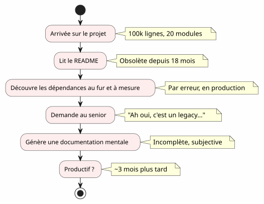
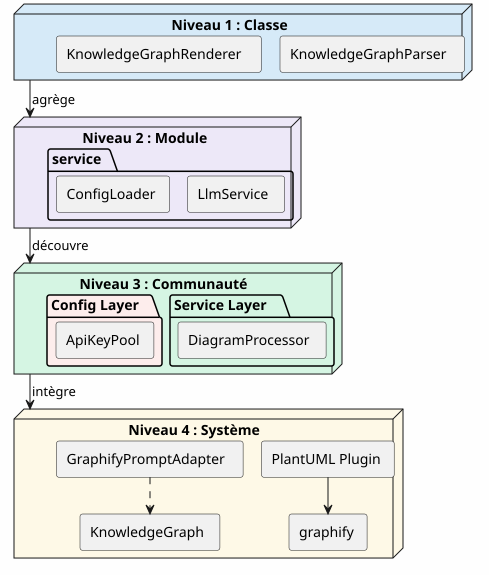
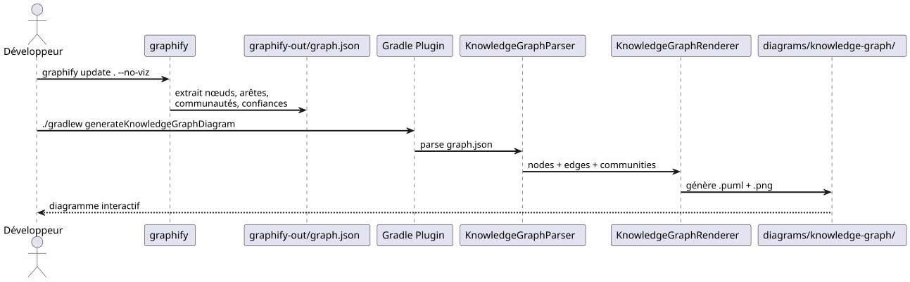
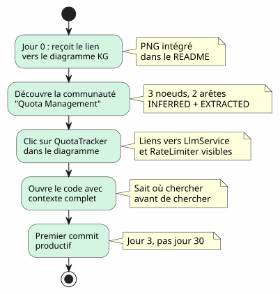

Le Knowledge Graph comme outil de compréhension de codebase
Publié le 24 April 2027
- 1. Le mur de l’onboarding
- 2. Qu’est-ce qu’un Knowledge Graph ?
- 3. Les 4 niveaux de compréhension
- 4. Le contexte perdu : un scénario concret
- 5. Pipeline : du code à la carte en une commande
- 6. Types d’arêtes : ce que dit la confiance
- 7. "5 minutes pour générer votre propre Knowledge Graph"
- 8. Valeur pour l’onboarding : le scénario Anaïs revu
- 9. Valeur pour la navigation quotidienne
- 10. Limites et perspectives
- 11. Conclusion
Vous arrivez sur un projet de 100 000 lignes. Vingt modules, cent classes, des dépendances invisibles, un historique de refactorings oubliés. Le README promet une architecture "microservices" mais le code raconte autre chose. Combien de temps pour être productif ? Trois mois — si vous avez de la chance. Et si une carte interactive du code, générée automatiquement, pouvait réduire cela à trois jours ?
1. Le mur de l’onboarding
Tout développeur a vécu cette scène :
-
Jour 1 : on vous montre le README (dernière mise à jour : il y a 18 mois)
-
Jour 3 : vous découvrez que le module
billingappelle en secret le modulenotification -
Jour 7 : un senior vous dit "Ah oui, cette classe fait en fait deux choses, on avait prévu de la splitter"
-
Jour 14 : vous réalisez que toute l’intelligence métier est dans
utils/LegacyHelper.java— un fichier qui n’est référencé nulle part

Le problème n’est pas le manque de documentation — c’est le manque de carte. Une carte qui montre le territoire réel, pas le territoire imaginaire du dernier redesign.
2. Qu’est-ce qu’un Knowledge Graph ?
Un Knowledge Graph est une représentation structurée du savoir contenu dans votre codebase :
| Entité | Exemple dans le code | Rôle dans le graphe |
|---|---|---|
Nœud |
Classe, fonction, concept |
Sommet du graphe |
Arête |
Appel, héritage, import |
Lien entre deux nœuds |
Communauté |
Groupe de classes liées |
Cluster visuel |
Type d’arête |
EXTRACTED, INFERRED, AMBIGUOUS |
Confiance dans la relation |
Score de confiance |
0.0 à 1.0 |
Fiabilité d’une arête INFERRED |
Hyperedge |
Relation 3+ nœuds |
Complexité architecturale |
La différence avec un simple diagramme UML ? Un diagramme UML montre ce que le développeur a décidé de montrer. Un Knowledge Graph montre ce qui est réellement là, y compris les dépendances cachées et les concepts émergents.
3. Les 4 niveaux de compréhension
Un Knowledge Graph permet de naviguer à quatre échelles :

| Niveau | Question | Granularité | Outil |
|---|---|---|---|
1 — Classe |
"Que fait cette classe ?" |
Ligne de code |
IDE, navigateur |
2 — Module |
"Quels sont les fichiers de ce module ?" |
Dossier |
|
3 — Communauté |
"Quels concepts travaillent ensemble ?" |
Groupe lié |
Knowledge Graph |
4 — Système |
"Comment tout s’articule ?" |
Architecture globale |
Diagramme KG complet |
Sans Knowledge Graph, les niveaux 3 et 4 sont inaccessibles — ou du moins, subjectifs et obsolètes.
4. Le contexte perdu : un scénario concret
Imaginez un nouveau développeur, Anaïs, qui arrive sur le projet. Elle doit ajouter une fonctionnalité de "quota tracking" pour les appels LLM.

Avec un Knowledge Graph, Anaïs aurait vu en 5 minutes :
-
QuotaTrackerest lié àApiKeyPool(arête EXTRACTED) -
RateLimiterest lié àQuotaTracker(arête INFERRED, confiance 0.82) -
Ces trois nœuds forment une communauté "Quota Management"
-
Un hyperedge relie aussi
LlmService— le point d’entrée
5. Pipeline : du code à la carte en une commande
Le pipeline Graphify + Plugin Gradle transforme votre codebase en diagramme PlantUML en deux commandes :

Zéro LLM. Tout est déterministe : même code, même graphe, même diagramme. Reproductible, versionnable, consultable hors ligne.
6. Types d’arêtes : ce que dit la confiance
Failed to generate image: PlantUML preprocessing failed: [From <input> (line 12) ] @startuml skinparam backgroundColor #FEFEFE node "LlmService" as ls node "DiagramProcessor" as dp node "ConfigLoader" as cl node "ApiKeyPool" as akp node "LegacyHelper" as lh #F1948a ls --> dp : EXTRACTED\n(calls, direct) cl ..> akp : INFERRED 0.75\n(creates, probable) ls --x lh : AMBIGUOUS\n(legacy, douteux) ^^^^^ Syntax Error? (Assumed diagram type: component) @startuml skinparam backgroundColor #FEFEFE node "LlmService" as ls node "DiagramProcessor" as dp node "ConfigLoader" as cl node "ApiKeyPool" as akp node "LegacyHelper" as lh #F1948a ls --> dp : EXTRACTED\n(calls, direct) cl ..> akp : INFERRED 0.75\n(creates, probable) ls --x lh : AMBIGUOUS\n(legacy, douteux) legend right |= Type |= Symbole |= Signification | | EXTRACTED | <b>--></b> | Relation visible dans le code | | INFERRED | <b>..></b> | Relation déduite (score de confiance) | | AMBIGUOUS | <b>--x</b> | Relation incertaine, à vérifier | endlegend @enduml
Les types d’arêtes sont cruciaux pour l’onboarding :
-
EXTRACTED : tu peux naviguer sereinement — c’est dans le code
-
INFERRED (0.6-0.8) : probablement correct, mais vérifie avant de refactorer
-
INFERRED (0.8+) : très fiable — utilise-le comme référence
-
AMBIGUOUS : attention, point sensible. Demande à un senior.
7. "5 minutes pour générer votre propre Knowledge Graph"
Failed to generate image: PlantUML preprocessing failed: [From <input> (line 20) ]
@startuml
skinparam backgroundColor #FEFEFE
skinparam ActivityBackgroundColor #D5f5e3
start
:pip install graphify==0.4.29;
:graphify update . --no-viz;
note right: Génère graphify-out/graph.json
:Ajouter le plugin Gradle;
note right: plugins { id("com.cheroliv.plantuml") }
:./gradlew generateKnowledgeGraphDiagram;
note right: Génère .puml + .png
:Vérifier diagrams/knowledge-graph/;
note right: knowledge-graph-full.puml
knowledge-graph-full.png
^^^^^
Syntax Error? (Assumed diagram type: activity)
@startuml
skinparam backgroundColor #FEFEFE
skinparam ActivityBackgroundColor #D5f5e3
start
:pip install graphify==0.4.29;
:graphify update . --no-viz;
note right: Génère graphify-out/graph.json
:Ajouter le plugin Gradle;
note right: plugins { id("com.cheroliv.plantuml") }
:./gradlew generateKnowledgeGraphDiagram;
note right: Génère .puml + .png
:Vérifier diagrams/knowledge-graph/;
note right: knowledge-graph-full.puml
knowledge-graph-full.png
stop
@enduml
# 1. Installer graphify
pip install graphify==0.4.29
# 2. Générer le Knowledge Graph
graphify update . --no-viz
# 3. Vérifier le JSON
cat graphify-out/graph.json | jq '.nodes | length'
# → 47 nœuds
# 4. Générer le diagramme
./gradlew generateKnowledgeGraphDiagram
# 5. Filtrer par communauté
./gradlew generateKnowledgeGraphDiagram -Pplantuml.kg.community="service layer"
# 6. Limiter la taille
./gradlew generateKnowledgeGraphDiagram -Pplantuml.kg.maxNodes=208. Valeur pour l’onboarding : le scénario Anaïs revu
Avec le Knowledge Graph, le scénario d’Anaïs change radicalement :

Le Knowledge Graph ne remplace pas l’IDE — il le complète. L’IDE montre où ; le KG monte pourquoi et comment ça s’articule.
9. Valeur pour la navigation quotidienne
L’onboarding n’est pas le seul cas d’usage. Pour un développeur senior, le Knowledge Graph sert à :
| Cas d’usage | Comment le KG aide | Exemple concret |
|---|---|---|
Refactoring |
Visualise les hyperedges (liens 3+) |
"Ces 5 classes sont toujours liées — extrait un module" |
Revue architecture |
Détecte les AMBIGUOUS aux frontières |
"L’appel entre billing et notification est incertain" |
Debug |
Trace la chaîne EXTRACTED |
"Pourquoi LlmService appelle-t-il LegacyHelper ?" |
Onboarding |
Explore les communautés par filtre |
"Qu’est-ce que le 'service layer' ?" |
Documentation |
Génère les diagrammes dans la CI |
README toujours à jour |
10. Limites et perspectives
Un Knowledge Graph n’est pas une baguette magique :
| Limite | Explication | Contournement |
|---|---|---|
Code statique uniquement |
Pas de runtime, pas de flux de données |
Compléter avec des traces APM |
INFERRED peut être faux |
Les arêtes déduites nécessitent validation |
Score de confiance + revue humaine |
Pas de sémantique métier |
Le KG sait "LlmService appelle ConfigLoader", pas "c’est le point d’entrée auth" |
Annotations manuelles ou LLM post-traitement |
Pas de temporalité |
Une snapshot du code, pas son évolution |
Générer régulièrement + comparer les versions |
Perspectives :
-
Diff KG : comparer deux versions pour voir les déplacements de communautés
-
KG interactif : clic sur un nœud → ouverture IDE à la ligne correspondante
-
KG historique : visualiser l’évolution des communautés dans le temps (dette technique qui migre)
11. Conclusion
Le Knowledge Graph transforme un acte solitaire et long (comprendre un codebase) en un acte partagé et rapide (consulter une carte).
Ce n’est pas de la documentation — c’est de la cartographie. Une carte qui se met à jour automatiquement, qui montre le territoire réel, et qui permet à chaque développeur, nouveau ou senior, de naviguer avec confiance.
pip install graphify==0.4.29
graphify update . --no-viz
./gradlew generateKnowledgeGraphDiagram3 commandes. 5 minutes. Une carte de votre codebase.